Signal
Signal
訊號是一連串的數字。分為兩種，離散和連續。

對於數學家來說，就是一維數列（離散）、一維函數（連續）。對於訊號學家來說，就是數位訊號（離散）、類比訊號（連續）。「訊號」只不過是一個比較親民的詞彙而已。
Signal
Signal
訊號是一連串的數字。分為兩種，離散和連續。
對於數學家來說，就是一維數列（離散）、一維函數（連續）。對於訊號學家來說，就是數位訊號（離散）、類比訊號（連續）。「訊號」只不過是一個比較親民的詞彙而已。
Signal Reconstruction
Signal Reconstruction
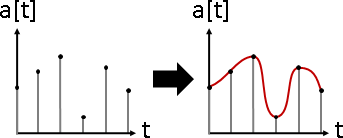訊號重建。找到原本波形。其實就是找到內插函數。
數列通常很長。如果採用多項式內插，那麼內插函數必須是非常高次的多項式。然而，非常高次的多項式，有劇烈震盪的現象，無法平順的符合資料，稱做「Runge's Phenomenon」。
數列通常取自真實世界、源自物理現象。例如聲音訊號，是由不同頻率的波，疊加而成的。詳見「傅立葉轉換」。
由於上述兩點，因而衍生了其他內插演算法。
Signal Resampling
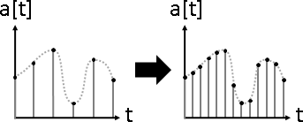訊號重新取樣。改變疏密程度，重新求得數值。變密稱做upsampling、變疏稱做downsampling。也有人把變密稱做interpolation、變疏稱做decimation。
首先重建訊號，找到內插函數。代入新位置，求得新訊號。
演算法（Triangle Interpolation）（Linear Interpolation）
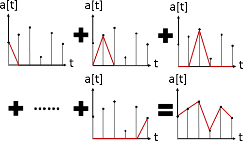三角波，等價於線性內插。不切實際，但是算得快。
演算法（Sinc Interpolation）
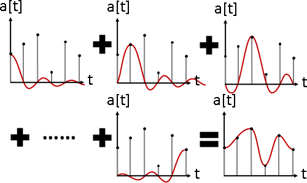方波函數，實施逆向傅立葉轉換，頻域轉時域（反過來也行），就是sinc函數。如果頻域只有特定幾個頻率有方波（理想中是無限薄的脈衝，但是實際上是有點厚的方波），那麼時域採用sinc函數，最理想不過了。算得極慢。
演算法（Lanczos Interpolation）
http://en.wikipedia.org/wiki/Lanczos_resampling
加強版。自由調整胖瘦。砍掉綿延的小波，只留主要的部分。
演算法（Mitchell-Netravali Filter）
http://de.wikipedia.org/wiki/Mitchell-Netravali-Filter
加強版。改用三次多項式函數模擬之。算得快。
Signal Estimation
Signal Estimation
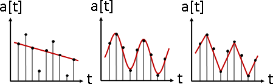訊號估計。找到訊號的規律。其實就是找到迴歸函數。迴歸函數是遞迴函數、週期函數等等具有規律的函數。
誤差設定成「均方誤差Mean Squared Error」：平方誤差，再除以數列長度；即是平方誤差的平均值。如此一來，長度不同的數列，得以互相比較誤差大小。
Signal Prediction
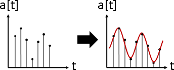訊號預測。訊號有某種規律，請預測接下來的訊號。
首先估計訊號，找到迴歸函數。代入新位置，求得新訊號。
演算法（Linear Prediction）（Linear Predictive Coding）
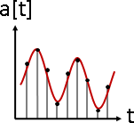Linear Regression是用線性函數符合資料，Linear Prediction是用線性遞迴函數符合資料。演算法請參考往後的Filter章節。時間複雜度O(N^2)，在頻域計算可加速為O(NlogN)。
求得線性遞迴函數之後，欲預測下一個新訊號，直接代入最後K個舊訊號即可。時間複雜度O(K)，K是線性遞迴函數的項數。
求得線性遞迴函數之後，欲預測第M個新訊號，共有四種演算法，請參考「Linear Recurrence」。時間複雜度O(K^2 * logM)，在頻域計算可加速為O(KlogK * logM)。
Signal Separation
Signal Separation
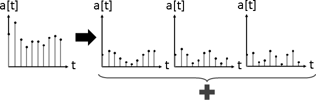訊號分離。許多道訊號疊合在一起，請分離出原始訊號。
演算法（Independent Component Analysis）
請參考「Independent Component Analysis」。
演算法（Discrete Fourier Transform）
請參考「Fourier Transform」。
Signal Representation
Karhunen-Loève Transform（Hotelling Transform）
Principal Compoment Analysis，數據是一道訊號。就這樣。
Floating Signal
Floating Signal
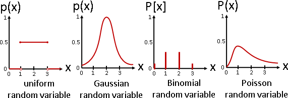先前曾經介紹浮動數字。數學家命名為「隨機變數random variable」，然而一點也不隨機。
經典的隨機變數：
uniform random variable binomial random variable Gaussian random variable Poisson random variable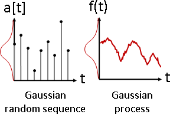
此處介紹一連串的浮動數字，也就是浮動數列。分為兩種，離散和連續。數學家命名為「隨機數列random sequence」和「隨機過程random process」，然而一點也不隨機。
經典的隨機數列和隨機過程：
Gaussian process：每個隨機變數都是高斯分布，每個隨機變數組合都是多維高斯分布。 Wiener process：高斯過程的積分。就是「布朗運動」。 Markov process：以先前幾個隨機變數的數值，決定下一個隨機變數。
隨機數列和隨機過程，兩大主要應用：
一、讓數列和函數具有浮動範圍、彈性範圍、緩衝範圍。例如「Gaussian Process Regression」、「Hidden Markov Model」。
二、亂跳的數列和函數。例如「CIR Model」。
Floating Signal的頻譜
題外話。訊號學家曾經嘗試運用「傅立葉轉換」，將隨機數列，從時域變頻域，看看是否有特性。
普通的隨機數列，頻譜混亂，無解析解。
滿足wide-sense stationary條件的隨機數列，則有解析解──兩兩的共相關數，可求得頻譜。而且具備常見的數學特性，諸如線性、摺積乘法對偶性、能量守恆（Parseval's theorem）。
然而，滿足wss條件的浮動數列，就是每個數字幾乎一樣的數列。缺乏討論意義，也無法用以解決問題。
數學家目前僅發現wss條件，尚未發現更具討論意義的條件。
Random Signal
Random Signal（Noise）
隨機訊號，通常稱作「雜訊」或「噪訊」，沒人稱作「亂訊」。
古代數學家沒有仔細區分「亂：無規矩」和「浮動：有規矩」的差別，把兩者都命名為隨機，混淆視聽。大家搞不清楚狀況的情況下，大家一直沒有深入研究雜訊的演算法。
將就的方式是1D Random Number。然而數字一輪一輪循環，很蠢。
將就的方式是將2D Random Number投影到一維。然而沒有任何理論根據，純粹憑感覺。
個人認為應該考慮三個面向：無法預測（齊亂）、均勻分布（聚散）、相近數字不接連出現（地序）。
由於沒人研究雜訊，大家只好援引浮動數列，以描述雜訊。
例如「White Gaussian Noise」：高斯隨機數列，每個隨機變數的平均數（浮動中心）和變異數（浮動範圍）均相同。因為剛好是白雜訊，所以名稱裡面有白。
Random Signal的頻譜
http://en.wikipedia.org/wiki/Colors_of_noise
數學家仿照光譜由紅到紫的特性，嘗試分類雜訊。
white: 強度為常數 grey: 強度符合人類聽覺曲線。（不那麼白） red: 強度正比於頻率倒數平方。 以頻率對數為座標軸，漸減6dB。 pink: 強度正比於頻率倒數。 以頻率對數為座標軸，漸減3dB。（不那麼紅） violet: 強度負正比於頻率倒數平方。 以頻率對數為座標軸，漸增6dB。 blue: 強度負正比於頻率倒數。 以頻率對數為座標軸，漸增3dB。（不那麼紫）
Smooth Random Signal（Smooth Noise）
http://lodev.org/cgtutor/randomnoise.html
http://www.iquilezles.org/www/articles/warp/warp.htm
計算學家運用「內插」，製造柔順的雜訊。網路上已有詳細教學文章，請讀者自行參考。
「value noise」：等距設置隨機數值，內插得到其餘數值。內插是為了製造綿延感。
「perlin noise」：柔順綿延，有點規律又不失隨機。演算法的每個步驟，好像有道理、又好像在鬼扯，非常奇葩。
「fBm noise」：疊加各種解析度（頻率）的雜訊，更細膩、更自然。解析度是2的各種次方。雜訊可以是上述任意一種。隱含混沌與碎形的概念。
「wavelet noise」：疊加各種頻率暨振幅的波。類似fBm noise。
Filter
Filter
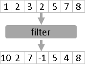輸入是一串數列，輸出是一串數列，數列到數列的函數，稱做「濾波器」。
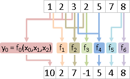每個輸出變數分開來看，濾波器其實是由許多函數組成。
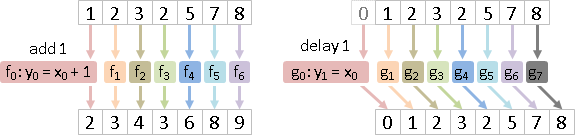簡單的例子是每項加1的濾波器、每項延遲1時刻的濾波器。
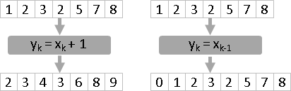當全部函數都相同，僅僅索引值不同，可以簡化成一個函數。
Linear Time-Invariant Filter（LTI Filter）
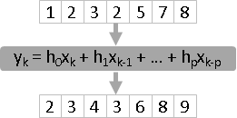濾波器由全部相同的線性函數構成。
LTI Filter等價於多項式乘法、摺積，容易計算。
LTI Fliter通常寫成線性組合形式
數列x，經過LTI濾波器h，得到數列y： y(n) = h(0)x(n) + h(1)x(n-1) + h(2)x(n-2) + ... + h(p)x(n-p)
Linear Filter可以寫成矩陣形式
[ h(0) 0 0 0 ... ]
[ h(1) h(0) 0 0 ... ]
[ h(2) h(1) h(0) 0 ... ]
[ : ] [ x(0) ] [ y(0) ]
[ h(p-1)~h(0) 0 0 ... ] [ x(1) ] [ y(1) ]
[ h(p)~h(0) 0 0 0 ... ] [ x(2) ] = [ y(2) ]
[ 0 h(p)~h(0) 0 0 ... ] [ : ] [ : ]
[ 0 0 h(p)~h(0) 0 ... ] [ x(n) ] [ y(n) ]
[ : ]
[ ... 0 h(p)~h(0) 0 0 ]
[ ... 0 0 h(p)~h(0) 0 ]
[ ... 0 0 0 h(p)~h(0) ]
A x y
數列看做向量，就可以寫成矩陣形式。好處如下：
一、套用矩陣運算的技巧。例如一連串的LTI Filter，得以複合成單一一個LTI Filter！
二、援引線性代數進行分析。例如計算eigenvector，以找出不受LTI Filter影響的數列！
LTI Fliter可以寫成摺積形式
{ x(0) x(1) x(2) ... x(n) } dot { h(0) 0 0 ... } = y(0)
{ x(0) x(1) x(2) ... x(n) } dot { h(1) h(0) 0 ... } = y(1)
{ x(0) x(1) x(2) ... x(n) } dot { h(2) h(1) h(0) ... } = y(2)
: : :
{ x(0) x(1) x(2) ... x(n) } dot { ... h(2) h(1) h(0) } = y(n)
-----------------------------------------------------------------
{ x(0) x(1) x(2) ... x(n) } dot { ... h(3) h(2) h(1) } = y(n+1)
{ x(0) x(1) x(2) ... x(n) } dot { ... h(4) h(3) h(2) } = y(n+2)
: : :
{ x(0) x(1) x(2) ... x(n) } dot { ... 0 h(p-1) h(p) } = y(n+p-1)
{ x(0) x(1) x(2) ... x(n) } dot { ... 0 0 h(p) } = y(n+p)
x convolution h = y
數列末端，增加多餘項次，就可以寫成摺積形式。好處如下：
一、援引多項式進行分析。例如當LTI Filter的多項式函數圖形，沒有無限大、無限小的尖峰，那麼此LTI Filter一定是moving average model。
二、援引傅立葉轉換進行分析，時域循環摺積等於頻域乘法。
LTI Fliter的三個基本問題
x pass h = ☐ x pass ☐ = y h
三個問題都有時域和頻域兩種解法。儘管頻域解法的時間複雜度較低，但是沒人使用頻域解法！一來濾波器長度通常很短，實施傅立葉轉換反而浪費很多時間；二來濾波器無法完美轉換到頻域。
x pass h = ☐
時域。滑動視窗的加權平均值，非常簡單。時間複雜度O(XH)，或者簡單寫成O(N^2)。
頻域。數列補零，摺積改作循環摺積，時域循環摺積就是頻域乘法。運用快速傅立葉轉換或快速數論轉換，時間複雜度O(XlogX + HlogH)，或者簡單寫成O(NlogN)。
x pass ☐ = y
通常無解。只好折衷，令x pass ☐盡量等於y，令誤差最小。大家習慣讓對應項的差平方的總和最小。
時域。寫成矩陣形式，套用最小平方誤差公式「Normal Equation」，立即得到公式解。時間複雜度簡單寫成O(N^3)。
x pass ☐ = y 的矩陣形式
[ x(0) 0 ... 0 0 ] [ h(0) ] [ y(0) ]
[ x(1) x(0) ... 0 0 ] [ h(1) ] [ y(1) ]
[ : : : : ] [ : ] = [ : ]
[ x(p-2) x(p-3) ... x(0) 0 ] [ h(p-2) ] [ y(p-2) ]
[ x(p-1) x(p-2) ... x(1) x(0) ] [ h(p-1) ] [ y(p-1) ]
X h y
對應項平方誤差最小，即是滿足 Xᵀ X h = Xᵀ y。
x pass ☐ = y旁門左道解法
有個改良方式，是在數列x和y末端補零。缺點是補零根本不合邏輯；優點是公式解變得美觀，稱做「Wiener-Hopf Equation」。
x pass ☐ = y 的矩陣形式，在數列x和y末段補零，讓矩陣Xᵀ X更整齊。
[ x(0) 0 ... 0 0 ] [ h(0) ] [ y(0) ]
[ x(1) x(0) ... 0 0 ] [ h(1) ] [ y(1) ]
[ : : : : ] [ : ] = [ : ]
[ x(p-2) x(p-3) ... x(0) 0 ] [ h(p-2) ] [ y(p-2) ]
[ x(p-1) x(p-2) ... x(1) x(0) ] [ h(p-1) ] [ y(p-1) ]
[ 0 x(p-1) ... x(2) x(1) ] [ 0 ]
[ 0 0 ... x(3) x(2) ] [ 0 ]
[ : : : : ] [ : ]
[ 0 0 ... x(p-1) x(p-2) ] [ 0 ]
[ 0 0 ... 0 x(p-1) ] [ 0 ]
X h y
對應項平方誤差最小，即是滿足 Xᵀ X h = Xᵀ y。
將 Xᵀ X 和 Xᵀ y 乘起來，得到Wiener-Hopf Equation：
[ xx(0) xx(1) ... xx(p-1) ] [ h(0) ] [ xy(0) ]
[ xx(1) xx(0) ... xx(p-2) ] [ h(1) ] [ xy(1) ]
[ : : : ] [ : ] = [ : ]
[ xx(p-2) xx(p-1) ... xx(1) ] [ h(p-2) ] [ xy(p-2) ]
[ xx(p-1) xx(p-2) ... xx(0) ] [ h(p-1) ] [ xy(p-1) ]
Xᵀ X h Xᵀ y
xx(t) = ∑ x(i)⋅x(i+t) sum of correlation of x(i) and x(i+t).
xy(t) = ∑ x(i)⋅y(i+t) sum of correlation of x(i) and y(i+t).
題外話，Wiener-Hopf Equation的循環矩陣，視作循環摺積，轉換到頻域，得到簡潔的公式解，稱做「Wiener Filter」。
訊號學家認為是重要成果，計算學家認為是旁門左道。
Cxx(t) ∗ h(t) = Cyx(t) Sxx(z) ⍟ h(z) = Syx(z) h(z) = Syx(z) / Sxx(z)
時域。建構等式需時O(N^2)，不斷位移的點積；解出等式需時O(N^2)，矩陣視作Toeplitz Matrix，求反矩陣。
頻域。建構等式需時O(NlogN)，快速摺積；解出等式需時O(NlogN)，矩陣是Circulant Matrix，快速循環摺積求反矩陣。
x pass ☐ = x >> 1
方才的問題有一個重要的延伸應用：x pass ☐ = x >> 1。迴歸，迴歸函數是線性遞迴函數，稱做Linear Prediction。
一串數列，推定每一個數值，皆是用前面緊鄰的N個數值計算而得──因此就用遞迴函數符合此串數列。使用線性的遞迴函數時，此函數稱作「線性預測函數」，此行為稱作「線性預測」。
訊號學領域則稱作Linear Predictive Coding。把一串長長的數列，壓縮成一個線性遞迴函數，只需儲存N個係數。只要反覆套用函數、代入訊號最後N個數值，就能預測下一個即將出現的數值。
x(n) = h(1)x(n-1) + h(2)x(n-2) + ... + h(p)x(n-p) x(i)：數列，已知。 f(i)：線性預測函數。 h(1)...h(p)：線性預測係數，未知。
想讓平方誤差總和最小，旁門左道的解法，等價於解Yule-Walker Equations。
[ cs(0) cs(1) ... cs(p-1) ] [ h(1) ] [ cs(1) ]
[ cs(1) cs(0) ... cs(p-2) ] [ h(2) ] [ cs(2) ]
[ : : : ] [ : ] = [ : ]
[ cs(p-2) cs(p-1) ... cs(1) ] [ h(p-1) ] [ cs(p-1) ]
[ cs(p-1) cs(p-2) ... cs(0) ] [ h(p) ] [ cs(p) ]
cs(i)：原本數列，索引值差i的相關數（correlation）的總和。
原本訊號、原本訊號挪動i項，兩者的點積。
簡單來說，就是各種位移量的點積。
由於O(NlogN)的演算法相當麻煩，大家習慣使用O(N^2)的演算法，把Circulant Matrix看成Toeplitz Matrix。
h
x pass h = y。y pass h = x。計算反濾波器 h。
時域。我尚未找到資料，胡亂推測可能類似這樣：
Y h = x y pass h = x 的矩陣形式 Yᵀ Y h = Yᵀ x Normal Equation 然後把 Y 代替成 X hᵀ 之類的東西，最後得到 hᵀ = (h S hᵀ)⁻¹ h S 令S = X Xᵀ 或者是 h = S hᵀ (h S hᵀ)⁻¹
頻域。請參考「Wiener Deconvolution」。時間複雜度O(NlogN)。
也有人把問題改成添加雜訊：(y + n) pass h = x。
這個問題有一個重要的延伸應用：(x + n) pass h = x。去噪，已知x+n，不知x和n，推定h，找到一個反濾波器h，去除雜訊n。
延伸閱讀：浮動數字（隨機變數）
上述內容通通可以推廣成浮動的複數數列，請參考：
http://ee.lamar.edu/gleb/adsp/Lecture 06 - Oprimum filters.pdf
注意到：浮動數列轉換到頻域，沒有解析解。滿足wide-sense stationary條件的浮動數列，才有解析解；但是每個數字幾乎一樣，缺乏討論意義。
Circuit（Under Construction!）
Resistor-Capacitor Circuit（RC Circuit）
low-pass filter
high-pass filter
Resistor-Inductor-Capacitor Circuit（RLC Circuit）
sine wave
Controller
PD controller
τ = kp (θd - θc) + kv (θd' - θc') τ is the generated joint torque. θd and θc the desired and current joint angles. θd' and θc' the desired and current joint angular velocity. kp and kv are the controller gain.
PID controller
SMC controller
Transfer Function
Modulation
A2A: AM FM D2A: ASK FSK PSK A2D: PAM PWM PPM PCM D2D: coding theory http://www.hightech.tw/index.php/2012-06-06-14-12-38/25-comm-network http://www.hightech.tw/index.php/2012-06-06-14-12-38/27-wireless-communication
Multiplexing
Fuzzy Logic
把布林數的AND和OR運算，變成函數的min和max運算。
Karnik-Mendel algorithm